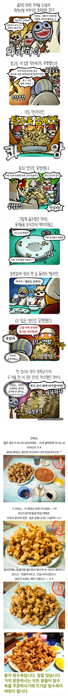

여기 아직도 있어?? ㅋㅋㅋㅋ

여기 아직도 있어?? ㅋㅋㅋㅋ
사진 대짜인줄 알고 많긴한네 ㅋㅋ 했는데 중짜라고?ㅋㅋㅋ
와이프가 사회복지 보수교육? 그거 들으러 가는 날에는 저기 무조건 간다던디
지금도 저렇게주나? 기회되면 가보고싶네 ㅋㅋㅋㅋ
와 만화볼때도 설마햇는데 실제로도 존나 많긴하네ㅋㅋㅋ
케챱 들어간 소스 합격!
거기다 진짜 뒤지게 빠삭해서 찍먹하면 입천장 다까짐ㅋㅋㅋㅋㅋ
개빠삭하다면 소스 부으면 되겠다
부산대 앞에도 두루치기밥이랑 탕수육 저렇게 존나 많이 주는데 있었는데 아직도 있으려나..
아니 시발 대자인줄알았는데 왜 중자야? ㅋㅋㅋ
뭐야 저게 왜 중자임.. ㅋㅋ
블루리본 붙어있는데 가면 먹을수맀나
태백관 요즘에 1시면 재료소진으로 문 닫음 웨이팅 뒤지게 길고 맛은 그냥저냥 맛있는 옛날중국집 맛
숙소가 낙민인데 태백관 문 닫았으면 부광반점이나 한양각 가면되고
수안쪽이면 다래성 가면 됩니다. 아 다래성 가고싶다
저게 어떻게 중자임